| |
|
BAĞLANTILAR
|
Genel Bilgiler
Bir Kavşak Kolunun Planda Tanımlanması Bağlantının Karakteristik Noktaları BAĞLANTI Menüsü Kavşak Kolu için Kot ve Deverlerin Türetilmesi Ana Yol ve Kavşak Kolu Arasındaki Sınır Hattının Hesaplanması Bağlantının Oluşturulması ve Kontrolü Geçiş Parçası ve Hız Değiştirme Şeridinin Tasarımı Yarı Otomatik veya Kontrollü Bağlantılar
Bağlantılar için Otomatik Kırmızı Kot ve Dever Hesabı Hız Değiştirme Şeritlerinin ÖlçülendirilmesiTüm Bağlantıların Ek Genişliklerinin Eş Zamanlı Hesabı Özel durum: İngiliz Yönetmeliğine Göre Bağlantılar Genel Bilgiler Karayolları ve otoyolların geometrik tasarım yönetmelikleri, bir yoldan katılım ve ayrılmaların, araçların yeni hıza uyum sağlamak için hızlanmalarına veya yavaşlamalarına olanak tanıyan, ana yol (gövde) ile kavşak kolları arasında ara yüzeyler tanımlayan parametrelere göre yapılmasını gerektirir. 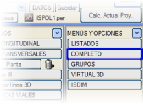ISTRAM®BIM'de bu elemanlar, BOYKESİT menüleri ve alt menülerinde bulunan bazı araçlar kullanılarak yarı otomatik olarak veya manuel olarak (geleneksel yöntemle) oluşturulabilir, ancak her zaman hesaplamaların ortamı ve doğrulaması olarak TAMAMLA menüsü kullanılır. TAMAMLA menüsünde, farklı seviyeli kesişim, ayrılma, bağlantı veya kavşak bölgelerinde eksen platformları arasındaki ilişki incelenerek, bağımlı eksenlerin (genellikle kavşak kolları) geometrisi, ana eksenlerden (veya ana yoldan) türetilir. TAMAMLA menüsüne girildiğinde program, halihazır haritayı saklar ve grafik düzenlemeyi kolaylaştıran boş bir ortam sunar. Bu menüden çıkıldığında, halihazır harita tekrar geri yüklenir. Bir kavşak kolunun bağlantısını incelemek için, bağlantıyı koşullandıran ana yolun ve kavşak kolunun genişlik diyagramının tamamen tanımlanmış olması ve her birinin kendi .vol dosyasında kaydedilmiş olması gerekir. Kavşak kolunun, temas bölgesinde ana yola bağımlı olan kırmızı kot ve deverler dışındaki tüm boykesit verileri önceden tanımlanabilir; ancak sadece ana platform ve yardımcı platform genişlikleri zorunludur (genellikle 4 metrelik tek bir sol genişlik ve 1 metrelik iç yardımcı platform genişliği kullanılır). Yönetmelik Tablosu: Bir kavşak kolu seçildiğinde, eğer ilişkili bir bağlantı tasarım tablosu (.den) yoksa bir uyarı mesajı görüntülenir. Ayrıca, bu diyalog kutusundan (eğer kavşak kolu olarak seçilmiş bir eksen varsa) ve ayrıca Bağlantı->Yönetmelik menüsünden bir .den tablosu seçme imkanı eklenmiştir. 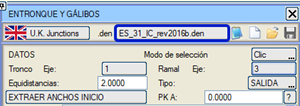
Bir Kavşak Kolunun Planda Tanımlanması Bağlantı geometrisini çözen algoritmalar, platform kenarlarının kesişim noktalarını belirlemek için her iki eksenin genişlik diyagramlarını ve plandaki göreceli konumlarını analiz eder. Hata oluşmaması için kavşak kolu ekseninin hassas bir şekilde çizilmesi çok önemlidir. Kavşak kolunun ayrılma aliymanının, ana yola göre bir bağlantı kullanılarak konumlandırılması önerilir. Böylece, kavşak kolunun geometrik çözümünün doğru ana yol mesafesiyle elde edilmesi plan hesaplayıcısına bırakılır. Özellikle, bir ayrılma kolunun planda doğru mesafede başlamaması veya ayrılmadan önce yaklaştığı bir başlangıç bölümüne sahip olması, hesaplama algoritmalarını yanıltır. Algoritmalar, teğet veya temas noktasından itibaren kavşak kolunun asla yaklaşmamasını bekler. 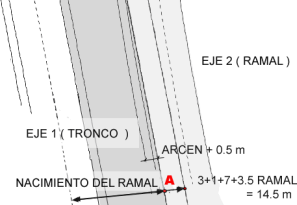Tipik bir örnek, 3 m genişliğinde sağ yarı-refüj, 1 m iç banket, 7 m ana platform ve 2.5 m sağ bankete sahip bir otoyol platformunun, ekseni dış beyaz şeritle tanımlanmış bir kavşak koluyla bağlantısıdır. Bu kol, ana yola paralel bölgede 3.5 m genişliğinde bir hız değiştirme şeridinden ayrılır, ancak yeterince ayrıldıktan sonra 4 m genişliğinde sol platform ve 1 m sol bankete sahip olacaktır. Şekilde görülebileceği gibi, bağlantının ofseti 14.5 m (3 m yarı-refüj + 1 m iç banket + 7 m platform + 3.5 m hız değiştirme şeridi genişliği) olmalıdır. Eğer kavşak kolu ekseni içten tanımlansaydı, hesaplama benzer olurdu ancak hız değiştirme şeridi hesaba katılmaz ve her iki eksenin çakışması nedeniyle 0.5 m çıkarılırdı, çünkü başlangıç bölgesinde kavşak kolunun 0.5 m platformu ve tüm sol banketi ana yolla üst üste binerdi, bu durumda ofset 10.5 m olurdu.  Bu
genişliklerin planda yol gösterici olarak çizilmesi için (ve ayrıca
TAMAMLA ortamında her eksen için [ÇİZİMLER] → Genişlikler seçeneği kullanılarak), plan tanım menüsünde bu referans paralellerin ilgili verilerle oluşturulması belirtilebilir. Bu
genişliklerin planda yol gösterici olarak çizilmesi için (ve ayrıca
TAMAMLA ortamında her eksen için [ÇİZİMLER] → Genişlikler seçeneği kullanılarak), plan tanım menüsünde bu referans paralellerin ilgili verilerle oluşturulması belirtilebilir.Bu bölgedeki kavşak kolu platformunun genişlik diyagramını tanımlamak karmaşık olacağından, nominal genişlikleri vermek ve sonrasında bir kırpma işlemiyle (ABCDE karakteristik noktalarından geçen bir sınır hattı aracılığıyla) bu fazla genişliği ortadan kaldırmak uygundur. Bu genişliklerin planda yol gösterici olarak çizilmesi için (ve ayrıca TAMAMLA ortamında [ÇİZİMLER] → Genişlikler seçeneği kullanılarak), plan tanım menüsünde resimde gösterilenler beyan edilir. Bağlantının Karakteristik Noktaları
BAĞLANTI Menüsü Bu menüde eksenler arası bağlantılar tanımlanır. Genişlik diyagramları ve ana yolun boykesitinden yola çıkarak, temas bölgesindeki kavşak kolunun boykesitini türetmek amaçlanır. Bu menüden program, karakteristik noktaları hesaplar, onları birleştiren sınır hattını oluşturur ve ana yolun enkesitleri yönünde regle bir yüzey olduğu ve kavşak kolunun da kendi enkesitlerine göre regle olduğu koşulunu kullanarak ana yoldan kavşak koluna dever ve kot aktarabilir. Bu nedenle sınır hattı, ana yolun verilerinden kot, boyuna eğim ve enine eğim "alır" ve kavşak koluna kot, kırmızı kot ve dever aktarır. Hesaplama, yaklaşık olarak eşit aralıklı bir kilometre noktaları dizisine göre bir dizi ayrık noktada gerçekleştirilir. Bu nedenle, bu enkesit aralığı değerinin sıfır olmaması zorunludur. TAMAMLA menüsünde, eksenleri ve plan genişliklerini çizerek başlamak veya daha iyisi, BOYKESİT'in genişliklerini çizmek tavsiye edilir. Al seleccionar [BAĞLANTI] seçildiğinde, aşağıdaki veri menüsü görünecektir:
Tabloda, klavye ile veya fareyle tıklayarak girilen bir veri alanı ve çeşitli parametrelerin elde edildiği bir hesaplama ve sonuç alanı bir arada bulunur. Sol tarafı ana eksene (ana yol) ve sağ tarafı ikincil eksene (kavşak kolu) karşılık gelir. Bir bağlantıyı doldurma ve hesaplama prosedürü aşağıdaki gibidir:
Eğer
bir ayrılma kolu, hatalı bir plan çizimi nedeniyle veya kavşak kolu ana
yola yaklaşıp sonra tekrar ayrıldığı için ana yola yaklaşarak
başlıyorsa, bu kutucuğa ayrılma (veya katılım) analizinin başlaması
gereken noktanın kilometresini (genellikle eksenler arası minimum
mesafe noktası) girerek hesaplama algoritmasına yardımcı olmak
mümkündür.
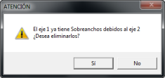
Bu seçenek, ana yolda bu kavşak kolundan kaynaklanan ek genişliklerin zaten tanımlı olup olmadığını algılar ve bunları silme imkanı sunar.
[SAĞ Taraf] / [SOL Taraf] tuşlarına basarak doğru değere geçilir. Elde edilen genişlikler de gözlemlenmeli ve gerekirse düzeltilmelidir. C ve E noktalarındaki ek genişlikler tasarıma göre belirlenmesi gerektiğinden, veri düğmelerine basılarak istenen değerler girilecektir. Tipik değerler C için her iki tarafta 0.5 (1 metrelik karakteristik kesiti belirlemek için) ve E için genellikle kaplamalı banket genişliğiyle aynı olan bir değerdir; 0.5 m değeri de sıkça kullanılır. Her durumda, program:
Grafik ekranında da ABCDE noktaları gösterilir. Uygun konumda olup olmadıklarını kontrol etmek veya KM A ve
ek genişlikleri değiştirip bu düğmeye tekrar basmak gerekir. Ayrıca, bu
seçeneğe basıldığında, B noktasındaki eğim ve hız değiştirme şeridi
için uzunluklar yeniden hesaplanır.
IS#rst.ras dosyası, r ekseni için t ekseninden ayrılma olarak türetilen kırmızı kotu içerir.
IS#rst.prl dosyası, r ekseni için t ekseninden ayrılma olarak türetilen deveri içerir. IS#rst.pas dosyası, r ekseni için t ekseninden ayrılma olarak türetilen geçiş noktalarını içerir. Katılım durumunda s harfi e ile değişir ve eksen numaraları duruma göre uyarlanır.
 [Kaydet]  ve [Yükle] ve [Yükle]  düğmeleri, sırasıyla bağlantının mevcut parametre tanımını içeren bir .ent
dosyası oluşturmak ve okumak için kullanılabilir. Olası bir sonraki
değişiklik durumunda kaydetmek faydalıdır. [Başlat] düğmeleri, sırasıyla bağlantının mevcut parametre tanımını içeren bir .ent
dosyası oluşturmak ve okumak için kullanılabilir. Olası bir sonraki
değişiklik durumunda kaydetmek faydalıdır. [Başlat]  düğmesi, yeni bir problemle boş bir başlangıç yapmak için tabloyu temizler. düğmesi, yeni bir problemle boş bir başlangıç yapmak için tabloyu temizler.Burada tanımlanan bağlantı, bağlantıyı başka bir zamanda ele almak istendiğinde ve sistem bu verileri ekrandan sildiğinde yüklenmek üzere kullanılabilir. TAMAMLA menüsünden çıkıp BOYKESİT'e dönülse bile, bu bağlantının verileri bellekte tutulur; ancak BOYKESİT'ten çıkılırsa veya başka bir bağlantı analizine geçilirse, .ent dosyasını yüklemek, verileri geri getirmenin en hızlı yoludur. Bağlantı menüsünde gabari hesaplaması ve görüntülenmesi [BAĞLANTI] menüsündeki gabari kontrol komutunu kullanmadan önce, dikkate alınacak eksenlerin platformlarının tamamen tanımlanmış olması ve dolayısıyla, her ikisinin platformlarını hesaplamaya olanak tanıyan boykesit tanım dosyaları .vol'un oluşturulmuş olması ve .vol dosyalarının adlarının PROJE tablosunda beyan edilmiş olması gerekir. Ardından, izlenecek adımlar şunlardır:
Kavşak Kolu için Kot ve Deverlerin Türetilmesi Yukarıda açıklandığı gibi, [Sınır] tuşuna basarak sınırı, verilen enkesit aralığına göre A, B, C, D ve E arasındaki ayrık noktalar serisinden oluşan bir poligon olarak hesapladığınızda, program otomatik olarak IS#2s1.ras ve IS#2s1.prl (kavşak kolu 2'nin ana yol 1'den ayrılması durumunda) veya IS#2e1.ras e IS#2e1.prl (2'nin 1'e katılması durumunda) dosyalarını oluşturur. Bunlar, ana yoldan türetilen kavşak kolu için kırmızı kot ve dever tanımının bir bölümünü içeren dosyalardır. Bu veriler, boykesitinin ana yola uyum sağlaması için kavşak kolunun boykesit tanımına dahil edilmelidir. Bu verileri kullanmak için şu şekilde ilerlenir:
[Yükle] işleminin, tanımlı tüm kırmızı kot verilerini silip yenileriyle değiştirdiğini, [Ekle] işleminin ise mevcut kırmızı kotun tüm verilerini koruyup yeni verileri sona eklediğini unutmayın.
Önceden tanımlanmış bir kırmızı kot varsa, kullanıcı tarafından belirtilen geçiş uzunluğuna göre mevcut kota uyum sağlayacak olan yeni türetilmiş kırmızı kot parçasını [Araya Ekle] seçeneği ile eklemek daha ilginç olabilir.
Türetilmiş
olanların bittiği ve tablodakilerin başladığı bölgedeki dever
geçişinin yumuşak bir şekilde yapıldığını kontrol etmek gerekir. Göreceli kenar eğimi,
saniyedeki dever artışının eksen türü için uygun olacak şekilde
korunmalıdır (saniyede %4, her dever noktası için 6 m geçiş reçetesine
yol açan ve genellikle bir kavşak kolu için uygun olan yaygın bir
değerdir).
Ana Yol ve Kavşak Kolu Arasındaki Sınır Hattının Hesaplanması Eksenler arasındaki bağlantılarda, sınır hattı, iki platformun temas ettiği çizgiye, yani kavşak kolunun boykesitini türetmek için daha önce kullanılan analitik sınırın izine karşılık gelir. BAĞLANTI Menüsü bölümünde açıklandığı gibi, [->lfr] düğmesine basıldığında sınır hattı oluşturulur ve ekrandaki çizime eklenir (yeniden çizim yapıldığında sarı renkte görünür) ve L67 çizgi tipi atanır. Eğer bu şekilde oluşturulan çizgi tatmin edici değilse, programın çizgi düzenleme araçlarıyla değiştirilebilir. Üstyapı platformlarını kırpmaya olanak tanıyan sınır belirlendikten sonra, bu bölünmeyi her iki eksenin birleştiği yerdeki yarma/dolgu şevlerine genişletmek ilginçtir. Bu işlem, çizgiyi manuel olarak düzenleyerek veya [Oto LFR] ya da [Oto LFR+] araçlarıyla otomatik olarak yapılabilir. Otomatik olarak oluşturulan çizgi tatmin edici ise, çalışma penceresinin herhangi bir yerine tıklayarak onaylamak ve profillerin kırpılmasına geçmek yeterlidir. Aksi takdirde, bu çizgiyi düzenleme araçlarıyla düzenlemenin tam zamanıdır. Unutulmamalıdır ki, bu çizgi, bağlantıyı işlerken daha önce tanımlanan çizginin bir uzantısı olduğundan, programın bunları tek bir işlemde kullanabilmesi için iki sınır hattını birleştirmek uygundur. 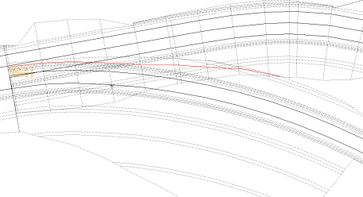
İstenen geometriye sahip çizgi elde edildikten sonra, eğer varsa (.lfr) sınır hatları dosyasına eklemek veya henüz oluşturulmadıysa yeni bir dosyaya kaydetmek uygun olur. İkinci durumda, dosyayı oluşturduktan sonra, onu hemen proje tablosuna atamak şiddetle tavsiye edilir. Sınır hatları dosyası kaydedildiğinde, program ekrandaki tüm L67 tipi çizgileri sınır hatları olarak yorumlar. Bu nedenle, bu düzenlemeler sırasında iki çizgi birleştirilirse, biri parçalara ayrılırsa vb., sonuçta elde edilen nihai durum .lfr dosyasına kaydedilir. Bağlantının Oluşturulması ve Kontrolü PROJE tablosundan hesaplama yapıldığında, program [HES] tuşu aktif olan proje eksenlerini hesaplayarak başlar ve ardından [BAĞ] tuşu aktif olan eksenlerin profillerini kırpar. Ayrıca, geometrik kırpmadan sonra hacimlerin yeniden kübajını yapma komutunu veren [YKB] tuşu da etkinleştirilmelidir. Kırpılmış profillerin alanları, kırpma noktasından geçen dikey bir sınıra kadar ölçülür. Enkesit çiziminde bu teorik kesim çizgisinin çizilip çizilmeyeceği belirtilebilir. BOYKESİT menüsündeki [Kavşak Kolu Ekle] işlemi, bir kavşak kolunun platformunu ana yolun profillerinden kesmek için analiz eder. İki eksenin platformlarının çakışması, tüm bu analizin doğru yapıldığının en iyi teyididir. Geçiş Parçası ve Hız Değiştirme Şeridinin Tasarımı Geçiş parçasını ve hız değiştirme şeridini projelendirmenin en yaygın yolları şunlardır:
Ayrıca, 2
ve 3 noktaları arasında, kavşak kolunun ayrılma bölgesinde, kavşak
kolunun genişlik geçişini yumuşatmak için daha önce verilen enkesit
aralığına göre ara noktalar enterpole edilir.
Özetle, 1, 2, enterpole edilmiş noktalar, 3, 4 ve nominal genişliğe dönüş 5 poligonu, ana yolun ana platformunun sahip olması gereken değişken genişlik diyagramını tanımlar. Bu diyagram, bağlantı alanını içerir ve kavşak kolu, tamamen ayrıldığı 3 ve 4 noktalarından geçen profilden başlar.
Bu hesaplanan veriler, genişlik tablosunun [B] düğmesi ile genişlik tablosundan silinebilir.
Bu noktada, elde edilen tekil noktalardan ve sonuçta ortaya çıkan hesaplama bölgelerinden geçen yeni bir profil serisi oluşturmak veya enterpole etmek ve ayrıca genişlik yasasını profil oluşturma olayı olarak dikkate alarak platformun genişlik değişikliklerini hassas bir şekilde tanımlamak ilginçtir. Bu nedenle program, [Enkesit Enterpolasyonu] menüsünde genişliklerin, deverlerin, sınır hatlarının ve hesaplama bölgelerinin enterpolasyonunu otomatik olarak aktif bırakır. 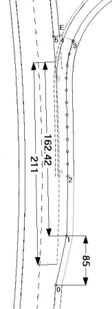3.5 metre genişliğindeki paralel bir hız değiştirme şeridi durumunda, 2 noktası, A'nın karşısında bu mesafede çakışacaktır. Yönetmeliğe göre hız değiştirme şeridinin uzunluğu, şekildeki durumda 211 metre olacaktır. Geçiş parçasının uzunluğu 85 metre olduğunda, 1C paralel bölümünün uzunluğu 162.42 metre olacaktır. Doğrudan bir kavşak kolu durumunda, 0, 1 ve 2 noktaları A noktası üzerinde çakışacaktır. Bu durumda geçiş parçasının uzunluğu sıfırdır ve 1C uzunluğu, ana yol üzerindeki C ve A noktalarının KM'leri arasındaki fark olarak verilmelidir (örneğin, PKC – PKA = 23.38 metre), bu da [BAĞLANTI] tablosunun alt bölgesindeki KM'lerden kolayca hesaplanabilir. 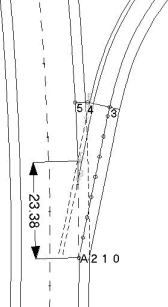
Karayolu Yönetmeliğinin Uygulanması [BAĞLANTI] tablosunun alt bölgesi, yönetmeliğe uyum sağlamak için bir dizi seçenek sunar:
Yarı Otomatik veya Kontrollü Bağlantılar 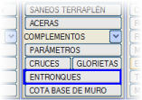Bir kavşağın tanımlanmasına benzer şekilde, boykesit menüsünde, mevcut eksene bağlı bağlantıların tanım menüsüne erişim sağlayan [BAĞLANTILAR] aracı sunulur. Bu aracın amacı, şimdiye kadar açıklananlara göre bir bağlantı oluşturma sürecini önemli ölçüde otomatikleştirmektir. Bu menünün verileri her eksen için tanımlanır ve ilgili .vol dosyasına kaydedilir ve yüklenir. Ayrıca, bu verileri .etq uzantılı bağımsız dosyalarda kaydetmek ve yüklemek de mümkündür. İki eksen arasındaki bir bağlantının verileri, KAVŞAK KOLU olarak çalışan eksende tanımlanmalıdır. Plandaki her bir eksen için bir veri tablosu tanımlanabilir. Her bir veriye, ayrıldığı, katıldığı veya geçtiği başka bir eksenle olan bağlantı bilgisi eklenir. 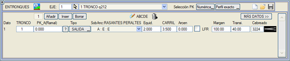
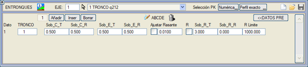 Tanımlanacak parametreler iki pencereye ayrılmıştır (ikincisine [DAHA FAZLA VERİ >>] düğmesiyle erişilir):
Fonksiyonlar:
ABCDE aracı, mevcut eksen için tanımlanan bağlantıların ABCDE noktalarını planda çizer. Bağlantılar için Otomatik Kırmızı Kot ve Dever Hesabı Bağlantı tanımına girilen veriler doğruysa, uygulama kırmızı kot ve deverlerde platformların bağlantısının mükemmel olması için gerekli değişiklikleri yapmanıza olanak tanır. Açıkçası, ana yolun .vol dosyasının tanımlı olması ve mevcut eksenin (veya kavşak kolunun) da genişlikler, aralıklandırma vb. gibi bazı verilerle tanımlanmış bir .vol dosyasına sahip olması gerekir. 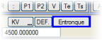Program, mevcut kırmızı kot veya dever yasasını, tanımlanan bağlantıların bölgelerinde, EkGen, KIRMIZI KOT, DEVERLER seçeneğinde ilgili parametreleri tanımlanmış olan eksenler için türetilen kırmızı kotlar ve deverlerle değiştirir.  KIRMIZI KOT menüsünde [Bağlantı] düğmesine basmak yeterlidir. Benzer şekilde, DEVERLER menüsünde de [Bağlantı] seçeneği bulunur. KIRMIZI KOT menüsünde [Bağlantı] düğmesine basmak yeterlidir. Benzer şekilde, DEVERLER menüsünde de [Bağlantı] seçeneği bulunur.Otomatik bağlantılar menüsü tarafından önerilen deverlerin ve kırmızı kotun kabul edilmesi durumunda, geçişlerin uygun olmayabileceği dikkate alınmalıdır. Geçişlerin gözden geçirilmesi önerilir, çünkü bunlar yönetmeliğe uygun olmayabilir; çok büyük veya çok küçük düşey kurplar ve yönetmelikle belirlenen metrajdan daha kısa dever geçişleri ortaya çıkabilir. Tüm Bağlantıların Ek Genişliklerinin Eş Zamanlı Hesabı 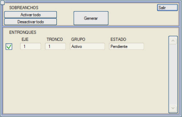Bu seçenekle, BOYKESİT menüsü → [BAĞLANTILAR]'dan bağlantıları tanımlanmış, şerit genişliği sıfırdan büyük olan ve aktif bir gruba ait olan tüm eksenlerin hız değiştirme şeritleri hesaplanır. Hesaplanan şeritler, ana yolların ek genişliklerine (A veya E'ye kadar) dönüştürülür ve ilgili .vol dosyaları güncellenir. Ana yol, devre dışı bırakılmış bir grupta olabilir. Bu diyalog kutusu, GEÇİŞ (katılım+ayrılma) tipi bağlantılar üzerinde etkili değildir. Seçenek, ek genişliklerden bazılarının zaten oluşturulup oluşturulmadığını analiz eder ve aşağıdaki verileri içeren bir tablo gösterir: EKSEN, ANA YOL, GRUP (Aktif/Devre Dışı) ve DURUM (Beklemede/Uygulandı). [Oluştur] komutuyla işaretli tüm ek genişlikler uygulanır. Bir ek genişliğin zaten uygulanıp uygulanmadığını analiz etmek için, program ana yolun genişlik tablosunun Genişlik 2 alanını, söz konusu eksen tarafından indüklenen ek genişliklerin görünüp görünmediğini kontrol eder. Hız Değiştirme Şeritlerinin Ölçülendirilmesi 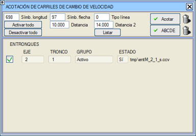Bu seçenek, seçilen bağlantıların geçiş parçası ve şerit uzunluklarını, yapılandırılabilir semboller ve çizgi tipleri kullanarak ölçülendirmeye olanak tanır. Bu seçeneği kullanabilmek için, hızlanma ve/veya yavaşlama şeritlerinin ya TAMAMLA menüsü → [Ek Genişlikler]'den, ya da manuel olarak TAMAMLA menüsü → [BAĞLANTI]'den hesaplanmış olması gerekir. Şerit uzunluğu, geçiş parçasının 1,5 metre genişliğe ulaştığı noktadan, C noktasına kadar, ana yolun KM'leri cinsinden ölçülür. [Ölçülendir] düğmesi, ilgili kutucuğu aktif olan tüm bağlantıların ölçülendirmesini oluştururken, [Geri Al] ile yapılan son ölçülendirme silinir. 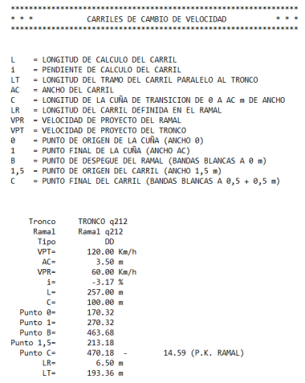 [Listele] düğmesi aracılığıyla, hız değiştirme şeritlerinin boyutları ve hesaplama parametreleriyle bir liste alabiliriz. TAMAMLA menüsünden, ister manuel olarak BAĞLANTI diyalog kutusundan, ister otomatik olarak OTOMATİK BAĞLANTILAR'dan bağlantıların önceden hesaplanması gerekir. ABCDE komutu, .ccv dosyalarından yola çıkarak zaten hesaplanmış olan bağlantıların bu noktalarını etiketler.  |
||||||||||||||||||||||||||||||||||||||||||||||||||||||||||||||||||||||||||||||||||||||||||||||||